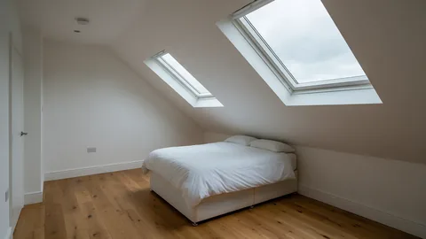
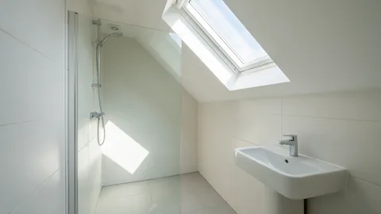
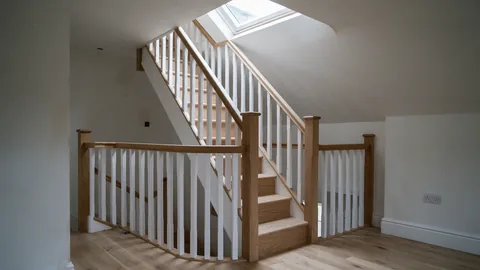
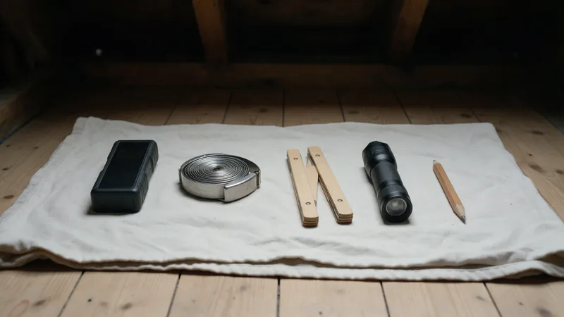

What we do
Six kinds of job, and one habit under all of them.
Whatever it is, nothing gets ordered until somebody has been up there with a tape, looked at what is holding the roof up, and worked out where the stairs can come. Here is each one on its own.
The six
One at a time.
 Generated photo
Generated photoDormer loft conversions
A box built out of the back slope, so the ceiling goes flat and the room has a wall you can stand a wardrobe against instead of a slope you keep ducking under.

Generated photoRooflight conversions
The roof line left exactly as it is, with windows let into the slope. The cheapest way up there when the roof already has the height to spare, and the quickest.
 Generated photo
Generated photoHip to gable conversions
For the semi or the end terrace where the roof slopes in at the side and the loft runs out to a point. The end wall gets built up square and the pointed bit becomes room.

Generated photoLoft bedrooms with en suites
A bedroom with its own shower room, laid out so the shower and the basin sit where the ceiling is highest and the bed goes under the slope, which is the only way the room works.
 Generated photo
Generated photoLoft boarding and storage
Not a conversion. Boards on raised legs above the insulation so the insulation still works, a hatch you can get through and a light that comes on. The job most people want first.

Generated photoStaircase design for lofts
Where the flight goes, which way it turns and what it takes off the floor below. Decided first, on paper, because everything else in the loft follows it.
The method
What a loft conversion is actually made of.
Four parts, in the order they get decided rather than the order they happen. Only the last one is the bit people picture.
From hatch to handover
Five stages every job goes through.
Drawn rather than photographed. The same five whether it is a rooflight conversion or a full dormer with a shower room in it.

Generated photoWhat goes up the ladder on the first visit. Everything after it comes off what these four tell us.
What we do not do
Worth saying out loud.
Quote off a photograph
You can tell plenty from a picture taken at the hatch and you cannot tell the two things that matter: what the height does as you walk out from the ridge, and whether a flight of stairs can get up there. Both need somebody in the loft and on the landing.
Print a head height as a rule
There are numbers in the regulations and your building control officer will hold the job to them. What there is not is a single height that means yes. The same number is a room under a steep roof and a corridor under a shallow one, so we measure yours and tell you.
Start before the paperwork is in
Drawings, the engineer's calculations and the building control application come first, and the planning position gets checked for your address. Starting a loft and sorting that out afterwards is how a job ends up half built and stopped.
Not sure which of those you need?
Most people are not, and plenty who ring about a dormer end up with a rooflight conversion or a boarded loft. Tell us the house and we will come and look.